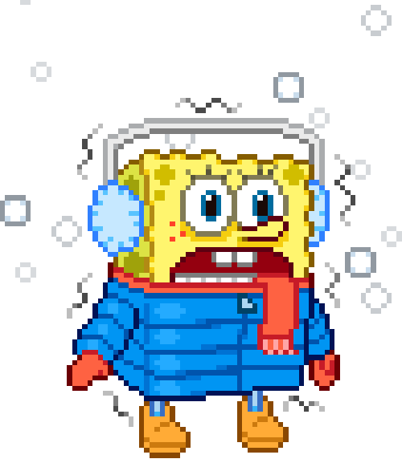
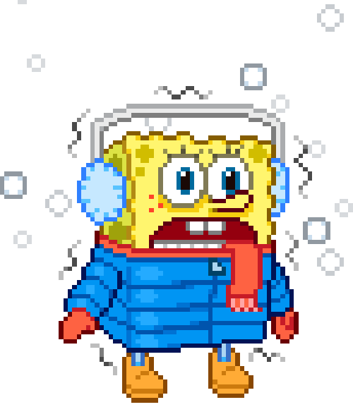
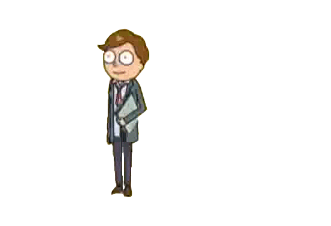
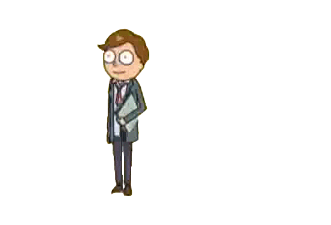

|
|
| Author's Welcome Note | Profile | Origin of the Logo | Goals | Escapade | Hobbies | Explore |
|---|
| Autobiography
First and foremost, the lone wolf, I was called a lone wolf once in my life because that person told me that I am always alone and serious. I can’t deny that because I chose that path to be alone. There’s always a reason why I am like that. I experience bullying when I was an elementary student because of my chubby physique and distorted walk. I was the castaway in my so called friends because they find me weird. I don’t know what is the reason why they are so away and always makes fun of me. I experienced every physical and verbal annoyance from my friends during that time. In my head, it needed to be stopped. I learned fighting back and begin to clench my fists towards them. On to the next chapter of my life! The musician, because I learned playing different kinds of instruments in here! Highschool Years are the best of the best! I learned many things during my high school years! Even when I’m a freshman, I became a 1st year board member in the school’s student council up to 3rd year high school. That’s why I became to think politically and economically because of the platforms I created and enacted. We went to different forums and seminars to widen our knowledge about the status quo of our dear country. I visited also the De La Salle University-Dasmariñas when I was a first year student and I was dumbfounded because of its luxurious gym and ambient nature. I also became a journalist during my highschool years that’s why I have a little bit of familiarity on writing such journals. Not to brag, but I reached on Regional Schools Press Conference with a title of a Sports Writer. I’m having fun while writing somethings because through it, I can express my emotion and perspectives anything under the sun. I’m a consistent achiever and a chorale member in those 4 years. Yet, CADT-1 is the best kinship with my colleagues I’ve ever had in my secondary level years. I’ve experienced being drenched with sweat and standing 3 hours under the sun during the afternoon to precede a Battlion Formation. I’m proud to say that I am the second in command or the J1 (Cadet Second Lieutenant, Sr.Grade). Those were the days where I cherished the most, together with the best people in my life.
Then college happened in my life, as of now, I am cramming because of too much load of work even if it is weekend. I’ve became the Jack-of-all-trades whether it is in the school or in our house. Though it’s okay since it’s the last chapter as student that’s why I have to give my best shot in this life. Together with my classmates and God as the center of my life, we can accomplish this current episode of our life and graduate with honor and pride. Nevertheless, the scrolling quote in my webpage says: Valor becomes feeble without and opponent. I will take every challenge in my life and will view it as a life lesson because I know I will benefit from it and someday I will prosper in life. As the Romans 8:28 says “All things work together for the goodness of our Lord.”
|
 


 



|
| © 2017 Timothy S. Bocalbos. All rights reserved. De La Salle University-Dasmariñas. | ........................................ |
 The lone wolf, musician, and the jack-of-all-trades. I think these 3 metaphorical terms can describe me as I progress in life. When you spot a 5’7 kid, with aviator eyeglasses, big eye bags, have dimples in his left cheek, and of course the signature spiky hair; perhaps that’s Timothy S. Bocalbos, the author of this webpage. Unlike when i'm a little chubby kid, i just want to play, eat and sleep all day as this right picture suggest. I’m a 19 year old ambivert who resides at Imus, Cavite together with my oh-so politically inclined dad ahh-ermm, I mean family.
The lone wolf, musician, and the jack-of-all-trades. I think these 3 metaphorical terms can describe me as I progress in life. When you spot a 5’7 kid, with aviator eyeglasses, big eye bags, have dimples in his left cheek, and of course the signature spiky hair; perhaps that’s Timothy S. Bocalbos, the author of this webpage. Unlike when i'm a little chubby kid, i just want to play, eat and sleep all day as this right picture suggest. I’m a 19 year old ambivert who resides at Imus, Cavite together with my oh-so politically inclined dad ahh-ermm, I mean family.  I am currently studying Bachelor of Science in Psychology in my 3rd year in college having a retention grade of 2.50! I think, that’s the most challenging part of this course. Maintaining grades and at the same time learning while still being sane in life. I will not make a resume-type-of-boring-page so you can comprehend my perspective about life with a comedic spice! So much of these petty talks, let’s go straight to my 3 metaphorical terms and bit by bit tell you why is it like that
I am currently studying Bachelor of Science in Psychology in my 3rd year in college having a retention grade of 2.50! I think, that’s the most challenging part of this course. Maintaining grades and at the same time learning while still being sane in life. I will not make a resume-type-of-boring-page so you can comprehend my perspective about life with a comedic spice! So much of these petty talks, let’s go straight to my 3 metaphorical terms and bit by bit tell you why is it like that  Just kidding, I talked to them wholeheartedly and told them that I am being hurt also from their psychological maltreatment. From then on, most of my friends began conversing with my almost every day and we’ve became acquainted with each other. I think that act was the bravest thing that I did when I was an elementary student, because it has a 50-50 chance to work that’s why I took a big sigh of relief when it ended.
Just kidding, I talked to them wholeheartedly and told them that I am being hurt also from their psychological maltreatment. From then on, most of my friends began conversing with my almost every day and we’ve became acquainted with each other. I think that act was the bravest thing that I did when I was an elementary student, because it has a 50-50 chance to work that’s why I took a big sigh of relief when it ended.